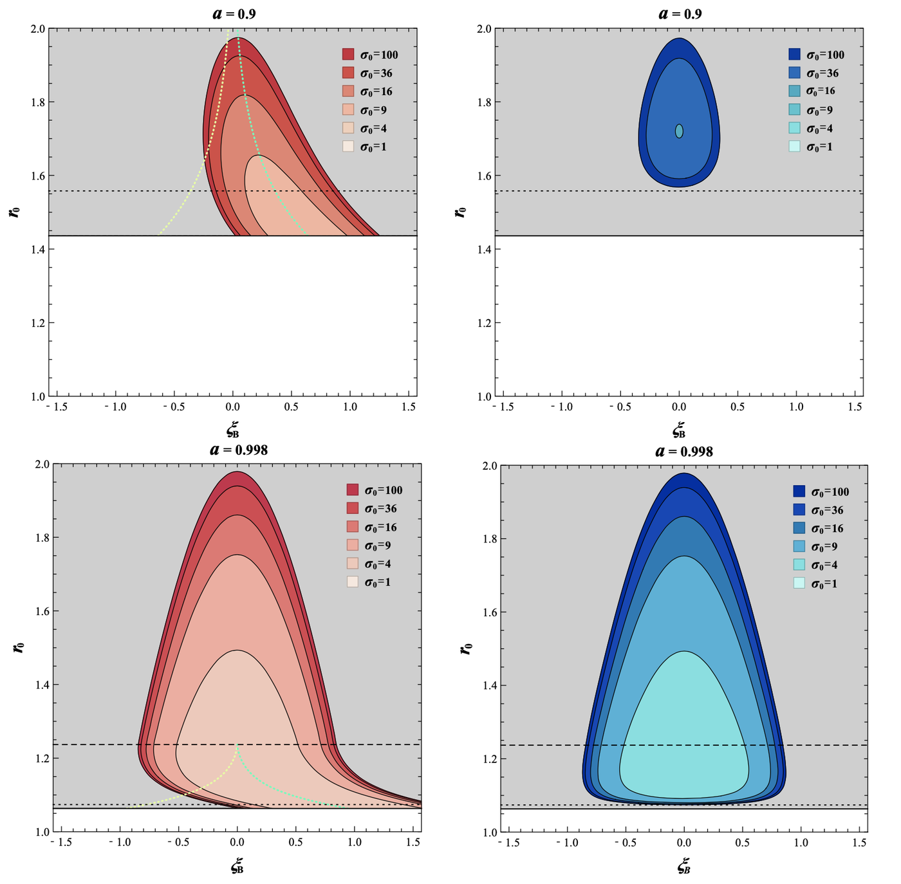
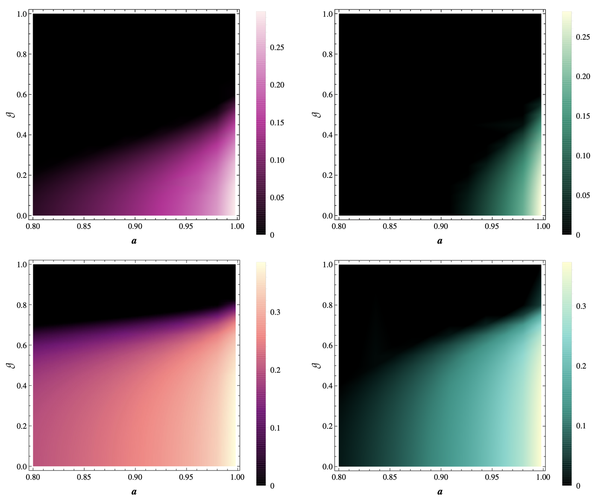
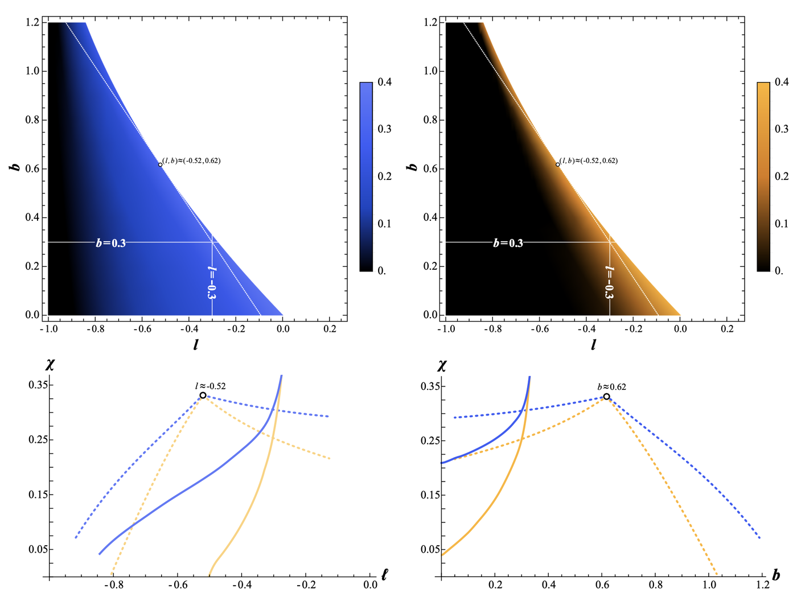
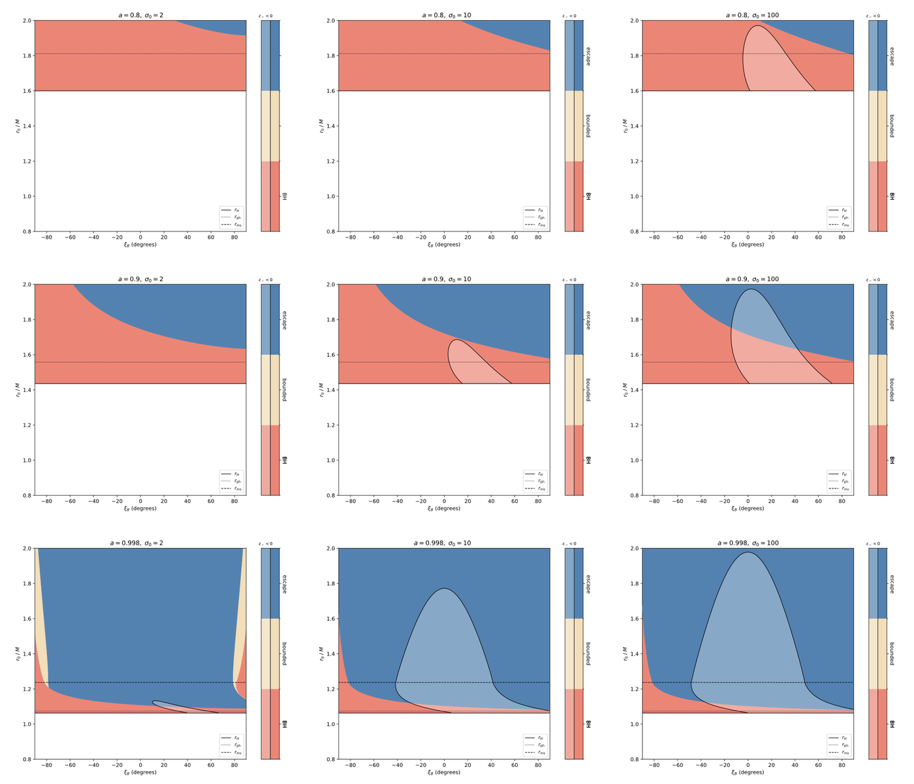

I. INTRODUCTION
I work on rotating black holes and what surrounds them. My master's research asked when magnetic reconnection near a Kerr black hole can extract its rotational energy, and found that in a Lorentz-violating bumblebee spacetime this kind of process cannot distinguish the violation from spin. That points me toward gravitational waves: how black-hole environments imprint on them, and whether those imprints can be separated from spin or from departures from general relativity. I am applying for PhD positions starting in 2027.
II. RESEARCH
My master's work is a series on energy extraction from rotating black holes by magnetic reconnection [1]–[4]. Each paper relaxes one assumption the earlier literature fixed for convenience, then measures how much the conclusion depended on it.
A. The plunging bulk plasma and orientation angle
Plasma plunging inside the ISCO favours plasmoids ejected at a positive angle to the flow, which widens the region where the local energy condition holds. [1]

B. Parameters in reconnection models
Letting the reconnection-model parameters vary shows that the Sweet–Parker limit overestimates how often an accretion flow can extract energy. [2]

C. Bumblebee gravity
In a rotating Einstein–bumblebee spacetime, the Lorentz-violating parameter enters every stationary equatorial quantity only through the effective spin ã = a√(1+l). [3]

D. Destinies of plasmoids from reconnection in the ergoregion
Requiring the energetic plasmoid to actually escape sets a spin floor of a ≈ 0.80: below it, reconnection cannot extract energy at any magnetization. [4]

ACKNOWLEDGMENTS
The author co-founded, and serves as Vice Chairman of, the Taiwan Youth Science Development Association, and writes popular-science articles in Chinese on black holes, symmetry, superradiance and dark matter for Fengyun Zhisheng (风云之声), a science-communication platform on WeChat run by Yuan Lanfeng of the University of Science and Technology of China. A talk at the Taiwan Youth Science Development Forum is scheduled for December 2026.
- Y. Shen,* H.-Y. YuChih,* and B. Chen, Energy extraction from a rotating black hole via magnetic reconnection: The plunging bulk plasma and orientation angle, Phys. Rev. D 110, 123010 (2024).
- Y. Shen* and H.-Y. YuChih,* Energy extraction from a rotating black hole via magnetic reconnection: Parameters in reconnection models, Phys. Rev. D 111, 023003 (2025).
- H.-Y. YuChih and Y. Shen, Energy extraction from a rotating black hole via magnetic reconnection: Bumblebee gravity, Phys. Rev. D (2025).
- H.-Y. YuChih and Y. Shen, Destinies of plasmoids formed from the magnetic reconnection occurring within the ergo region of a rotating black hole, accepted (2026).
*These authors contributed equally.